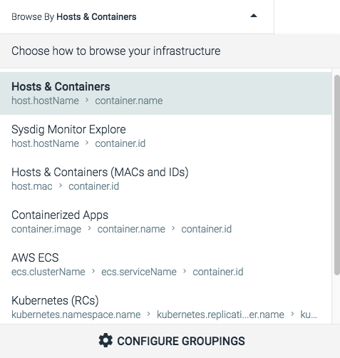
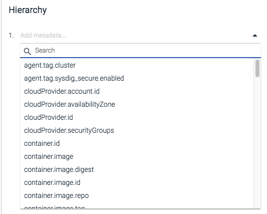
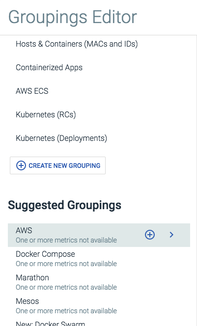
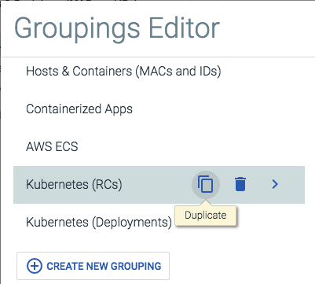
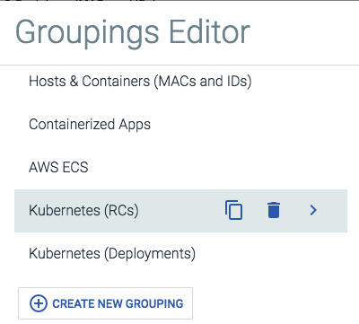

Configure Groupings in Sysdig Secure
Groupings are hierarchical organizations of labels, allowing users to organize their infrastructure views in a logical hierarchy. Users can switch between pre-configured groupings via the Browse By menu, or configure custom groupings, and then dive deeper into the infrastructure.
Note
For more general information about groupings, refer to the Grouping, Scoping, and Segmenting Metrics documentation
Contents
Switch Groupings
To switch to a new grouping:
From the
Commands Auditmodule, open theBrowse Bymenu, and select the grouping from the list:
Create a New Grouping
To create a new grouping:
From the
Commands Auditmodule, open theBrowse Bymenu, and clickConfigure Groupingsto open theGroupings Editor.Click the
Create New Groupinglink.Open the first level grouping drop-down menu
 Select the desired top-level label, or search for it by scrolling or using the search bar, then select it.
Optional: To add additional grouping levels, open the new blank drop-down menu, and repeat step 3.
Note
Step five can be repeated until there are no further layers available in the infrastructure label hierarchy.
Click the
Savebutton to save the grouping.
Note
Sysdig Secure has several suggested groupings that are pre-configured, but not included in the default list. These can be added by clicking the Add (plus) button beside the grouping name:
|  |
Rename an Existing Grouping
To rename a grouping:
From the
Commands Auditmodule, open theBrowse Bymenu, and clickConfigure Groupingsto open theGroupings Editor.Select the grouping from the list.
Edit the name of the grouping in the
Editpanel, and click the Save button.
Duplicate an Existing Grouping
To create a duplicate of a grouping:
From the
Commands Auditmodule, open theBrowse Bymenu, and clickConfigure Groupingsto open theGroupings Editor.Click the
Duplicate(pages) icon beside the relevant grouping to duplicate it: Configure the new grouping, and click the
Savebutton.
Delete a Grouping
To delete a grouping:
From the
Commands Auditmodule, open theBrowse Bymenu, and clickConfigure Groupingsto open theGroupings Editor.Click the
Delete(trash can) icon to remove the grouping. Click the
Savebutton to confirm the change.